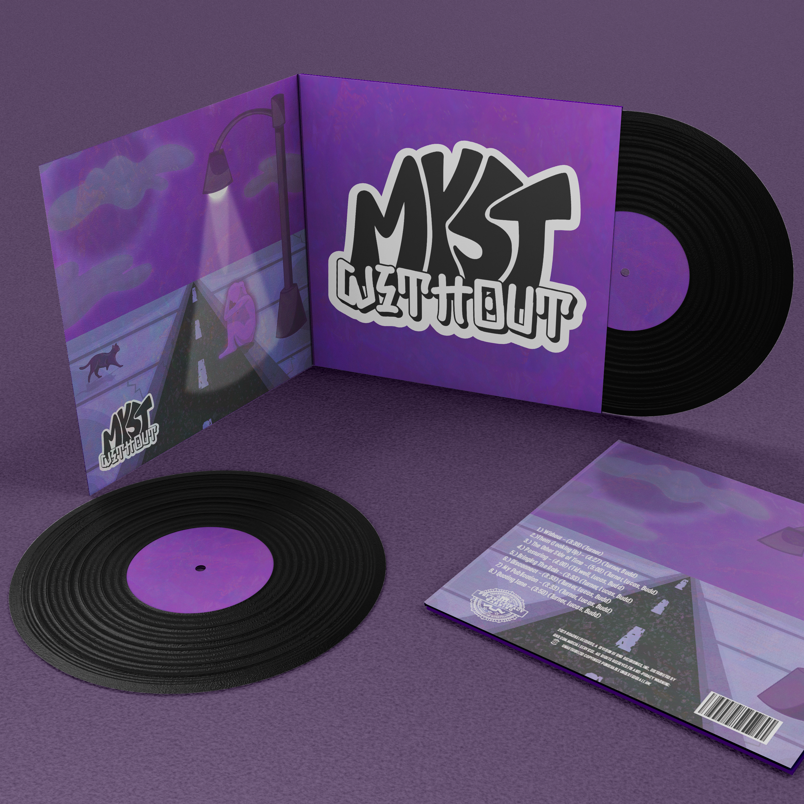
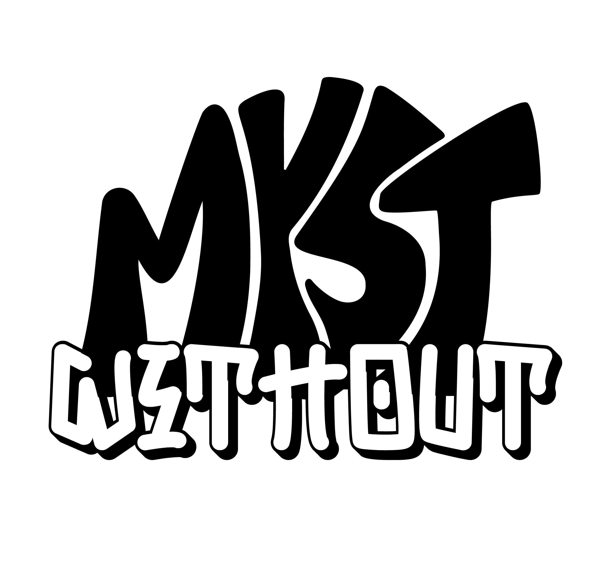
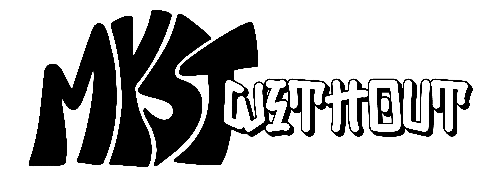
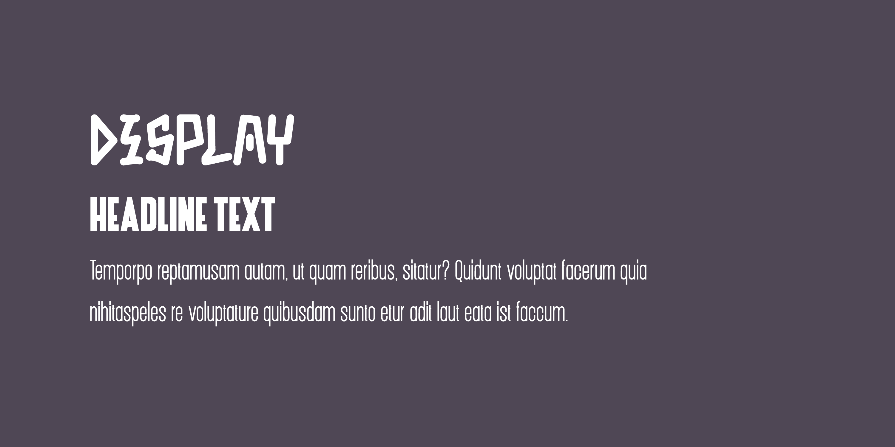
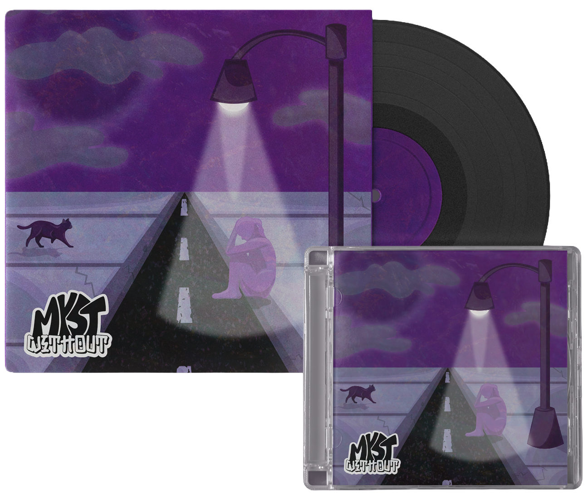

An atmospheric identity developed for an album release, using restrained visuals and pacing to reflect themes of isolation and quiet tension.
The identity for Myst: Without explores themes of loneliness and distance, using composition, color, and pacing to create a sense of stillness and introspection.
Brand Identity

The identity is built as a cohesive system, using typography, color, and imagery to establish a consistent tone across physical and digital formats. Each element is designed to support the atmosphere while maintaining clarity and structure.


PRIMARY
SECONDARY
SECONDARY
SECONDARY

Punk Rotten is used sparingly for large headlines. Other smaller headlines, subheads, body copy, and captions use Dickson.

The packaging extends the identity into a physical format, using layout and surface to reinforce tone. The vinyl and sleeve are designed to feel minimal and intentional, allowing the imagery and color to carry the emotional weight.